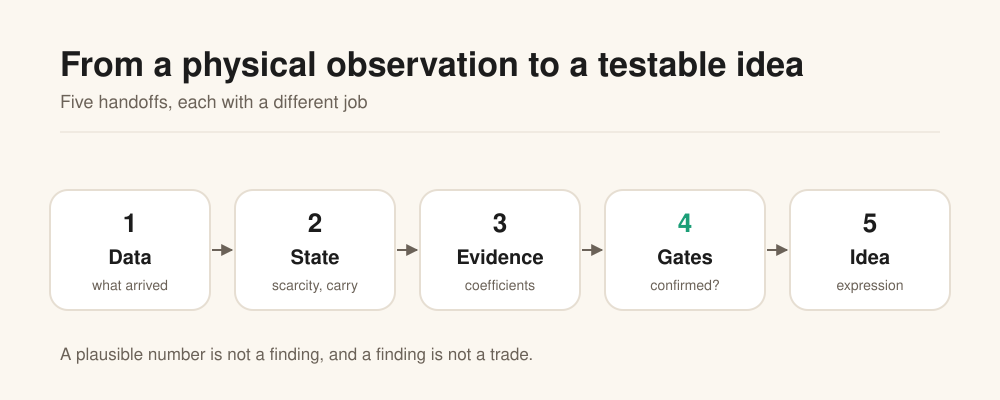
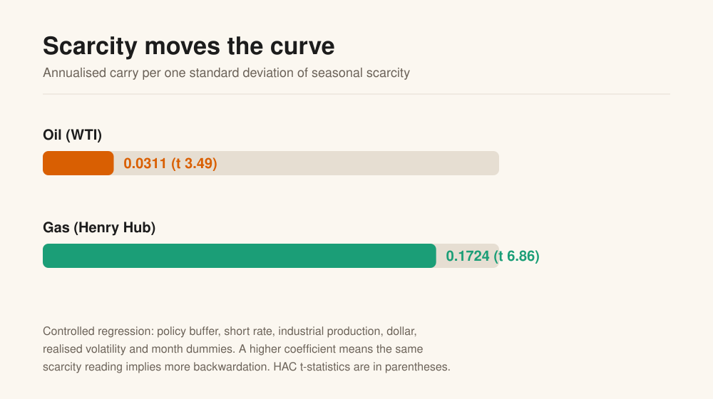
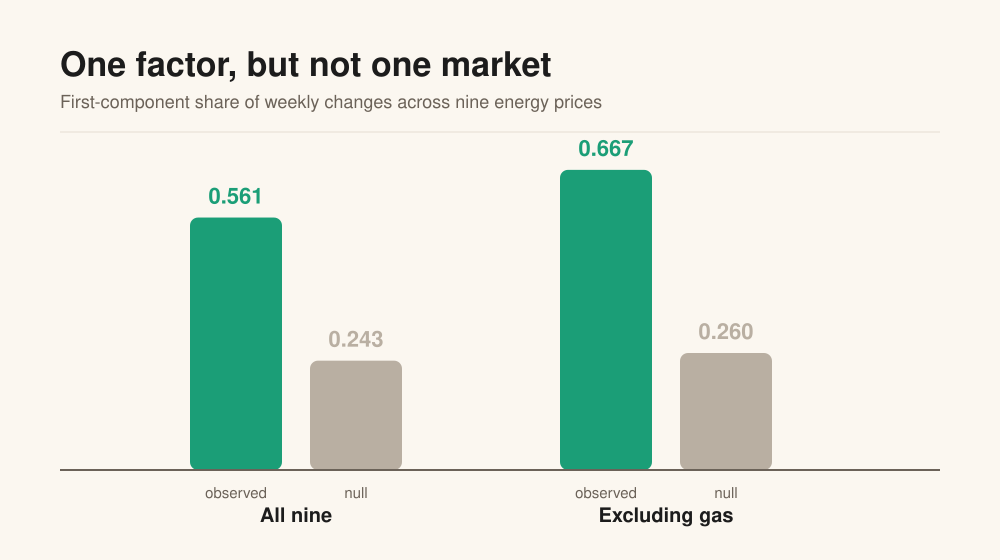
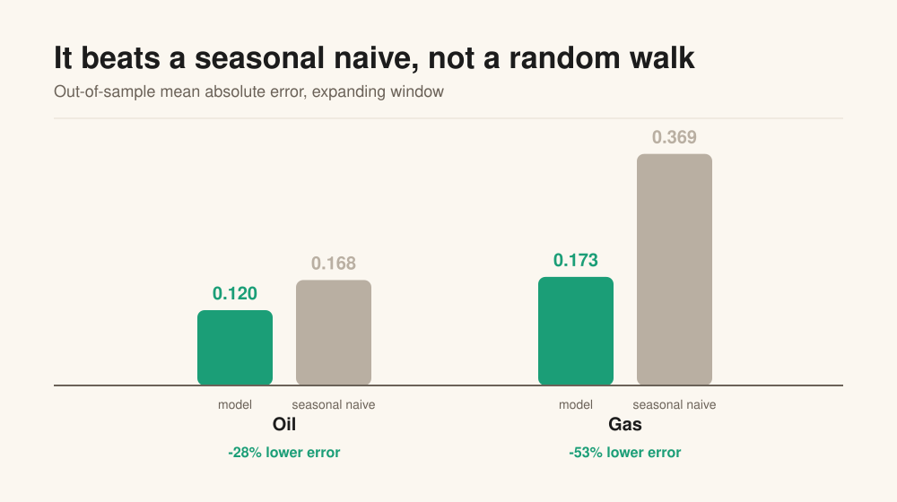
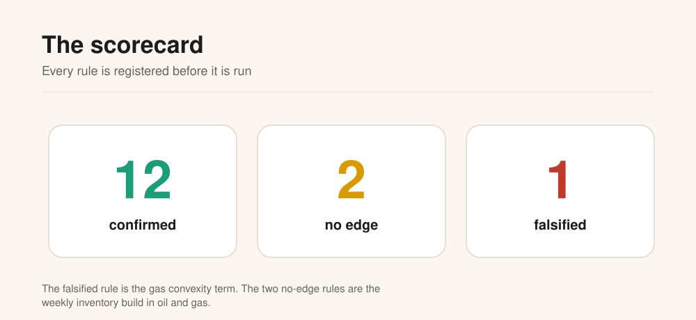
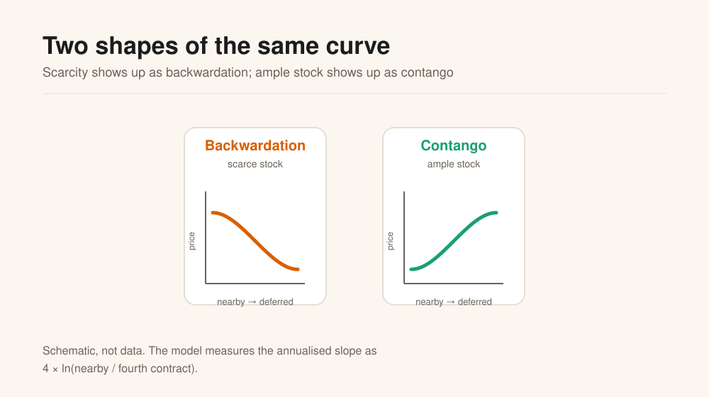

When the barrel is scarce,
the curve should pay for it.
A reproducible study of how physical scarcity shapes the oil and gas futures curve, what survives a controlled test, and what does not. No market data is published here.
The question
Oil and gas are physical markets. When the stock is low relative to the same week in prior years, the nearby barrel should be worth more than the deferred one. The curve should backwardate. Is that true in the data, how strong is it, and can it frame a trade idea without confusing a story with an edge?

Data
What arrived, and is it complete.
State
Scarcity and the shape of the curve.
Evidence
Does the relation survive a controlled test.
Gates
Confirmed, no edge, or falsified.
Idea
An expression and a registered prediction.
The evidence
The same scarcity reading implies more backwardation in gas than in oil, and the relation is not a single global energy factor.




The method in one page
Two measurements, one regression, and a set of tests that are allowed to fail.
This week against the same week in prior years
A seasonal z-score of inventory. The seasonal comparison removes the winter/summer shape that would otherwise dominate the level.
4 × ln(nearby / fourth)
The annualised three-month slope. Positive is backwardation, negative is contango.

What is built, in progress, researched
| Status | Item |
|---|---|
| Built | Data layer, scarcity and carry, controlled regressions, common-factor null, state tests, walk-forward, scorecard, deterministic figures |
| In progress | Live curve integration; gas event study; dated news and event feed |
| Researched | Gas storage-capacity ceiling; power leg; a second holdout; a wider commodity panel |
What is not here. No price series, no inventory series, no vendor files, no point-in-time store. The figures are aggregate summaries. The underlying data licences are not granted by this repository.
Run it
The public repository contains the estimator, the figures and the checks. It contains no market data. The whole build takes about a minute.
git clone https://github.com/Chanta007/commodity-factor-model.git
cd commodity-factor-model
make buildExpected demo output:
synthetic demonstration, no market data
true beta 0.1700
estimated beta 0.1684
HAC t 41.09
observations 520
R2 0.769The estimator is not told the coefficient; it recovers it from a synthetic panel. The demo is not the market result. It shows that the design matrix, the regression and the HAC standard errors work.